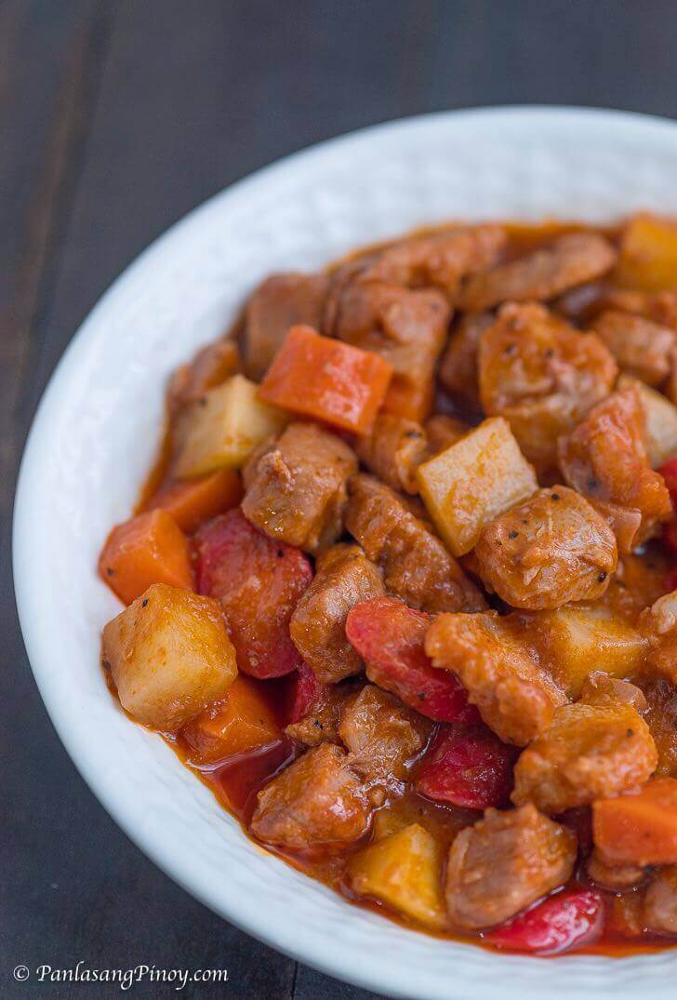

Pork Menudo

Menudo comprising of pork and vegetables
Image source: Panlasang Pinoy
As a Filipino, I'm pretty pretty 99.99999% sure that you had taste it once in your life. Where? Probably, in a fista.
This is a dish that you will even bring back home just because of how mesmerizing it tastes. An unli delicious tongue quenching food for 2-3 days!
However, I was also curious as to how to prepare and serve this dish. So hop on! Let's get the necessary recipe rolling...
Ingredients:
- 2 lbs pork
- 1/4 lbs pig liver
- 1 cup potatoes (diced)
- 1 carrot (cubed)
- 1/2 cup soy sauce
- 1/2 lemon
- 1 onion (chopped)
- 3 cloves garlic (minced)
- 1 teaspoon sugar
- 3/4 cup tomato sauce
- 1 cup water
- 4 hotdogs (sliced diagonally)
- 2 tbsp cooking oil
- 2 to 3 dried bay leaves
- Salt and pepper (to taste)
Procedure
- Combine the pork, soy sauce, and lemon in a bowl. Mix well and marinate for 30 minutes.
- Heat the cooking oil in a pan.
- Saute the garlic and onion.
- Add the marinated pork. Cook for 5 to 7 minutes.
- Pour in the tomato sauce and water, then add the dried bay leaves. Let the mixture boil, then simmer for 30 minutes to 1 hour, depending on the toughness of the pork. Add more water as necessary.
- Add the liver and hotdogs. Cook for 5 minutes.
- Add the potatoes, carrots, sugar, salt, and pepper. Stir and cook for 8 to 12 minutes.
- Serve. Share and enjoy!
The source for the Ingredients and Procedure is from Panlasang Pinoy. You can check out his, Vanjo Merano's, video as he demonstrates the preparation for the Pork Menudo.
Home